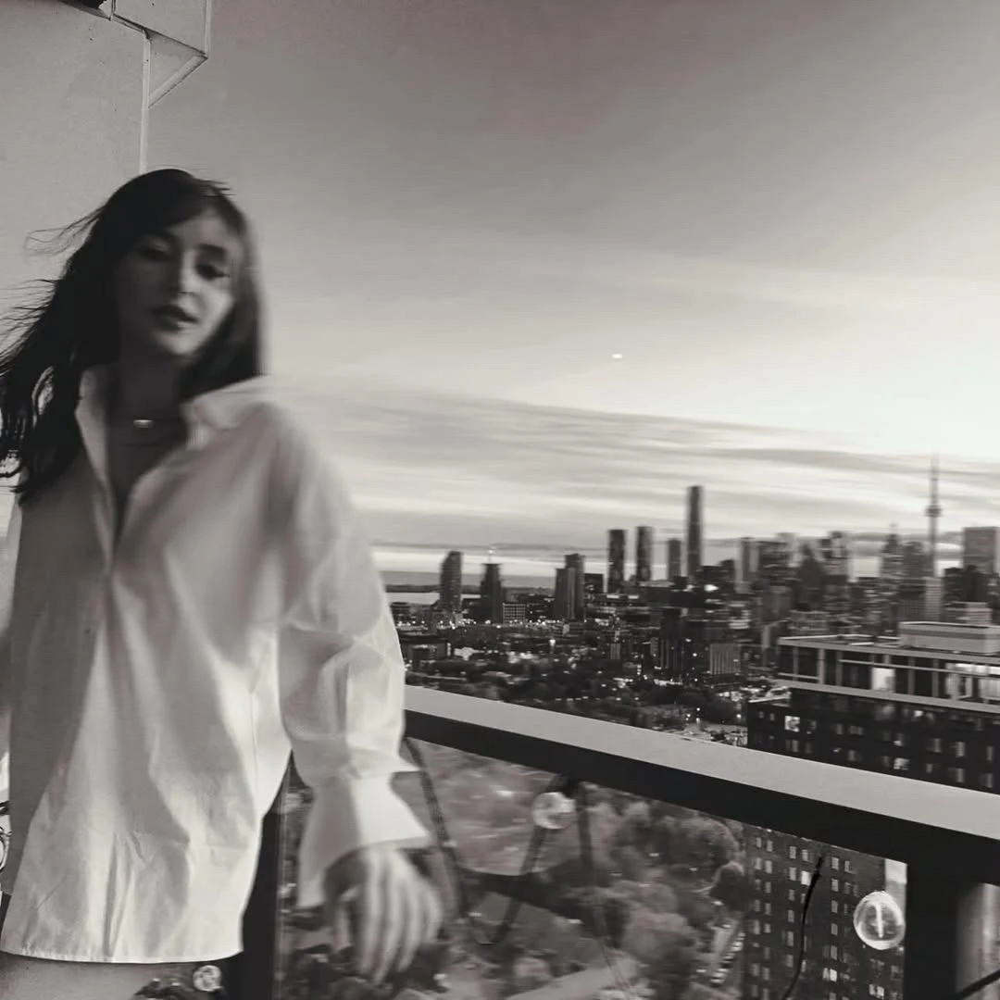
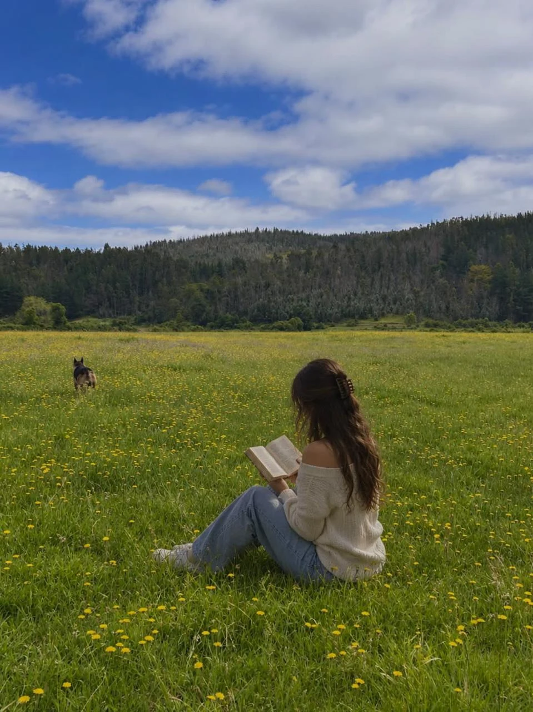
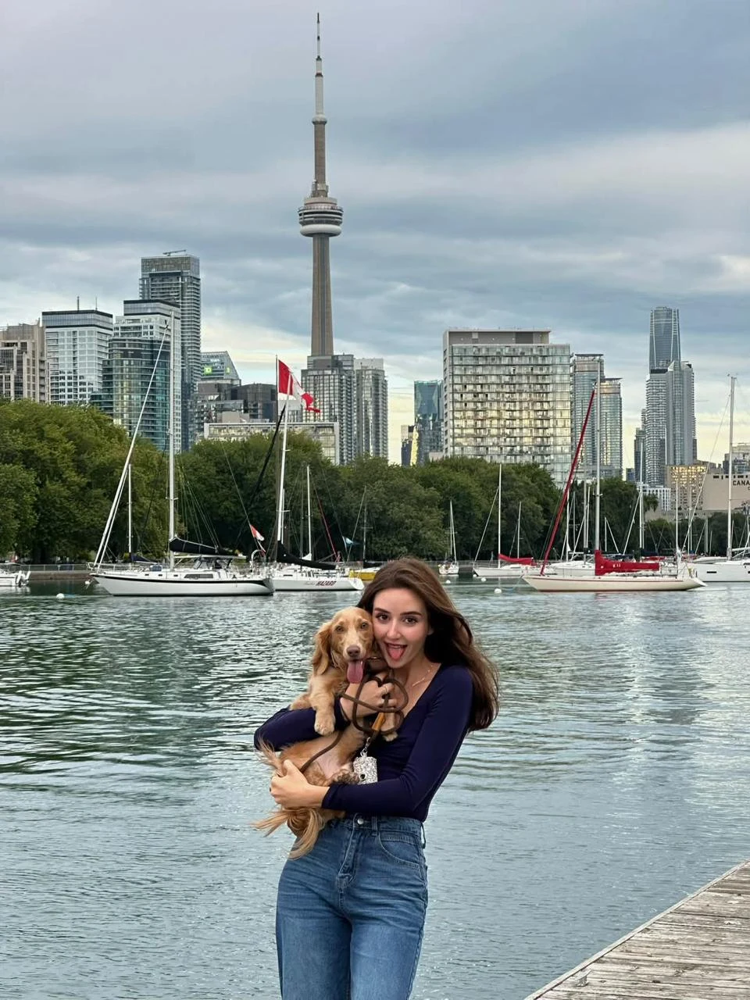
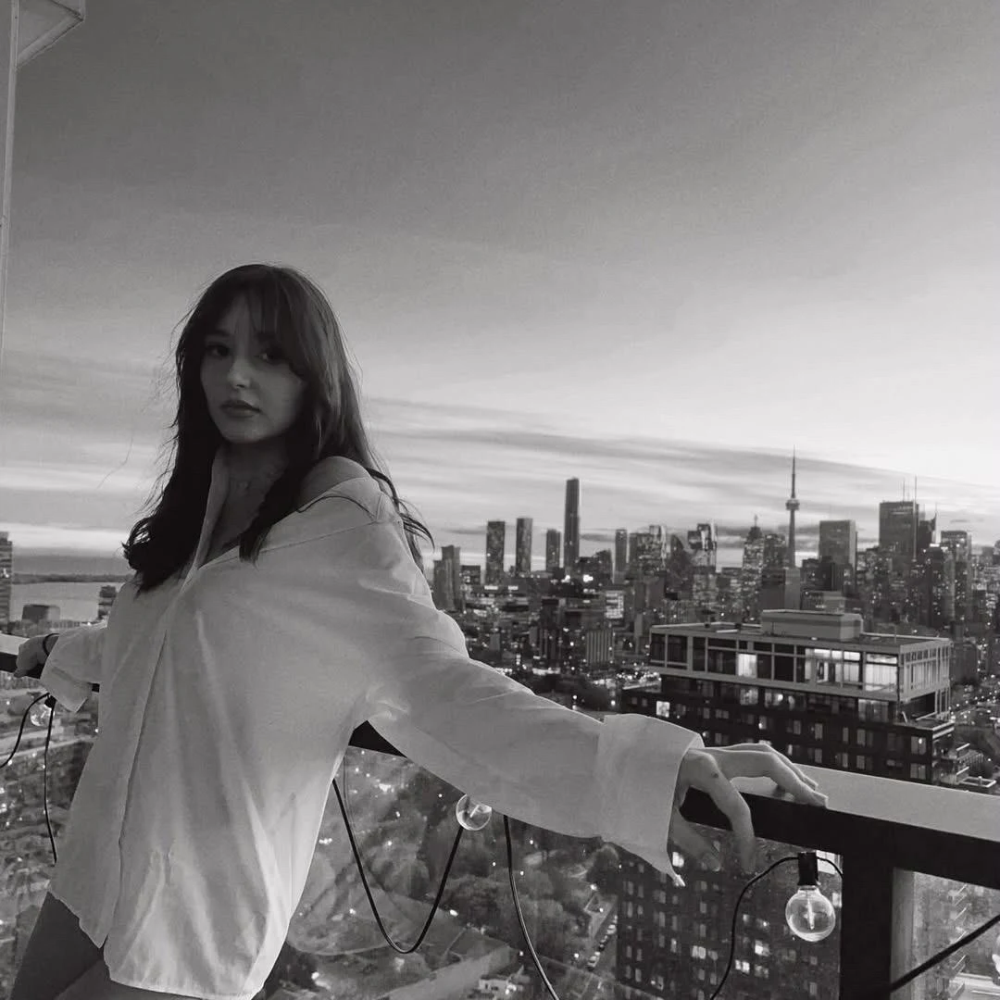
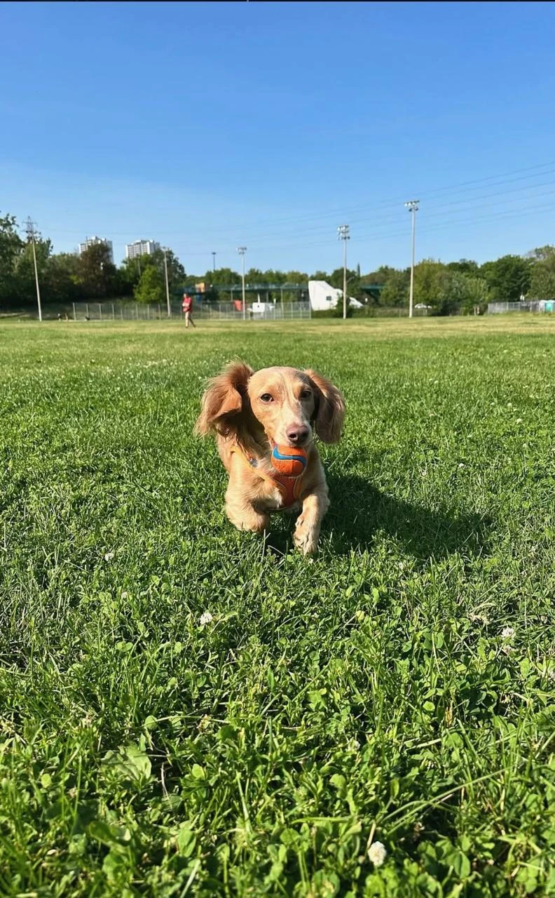
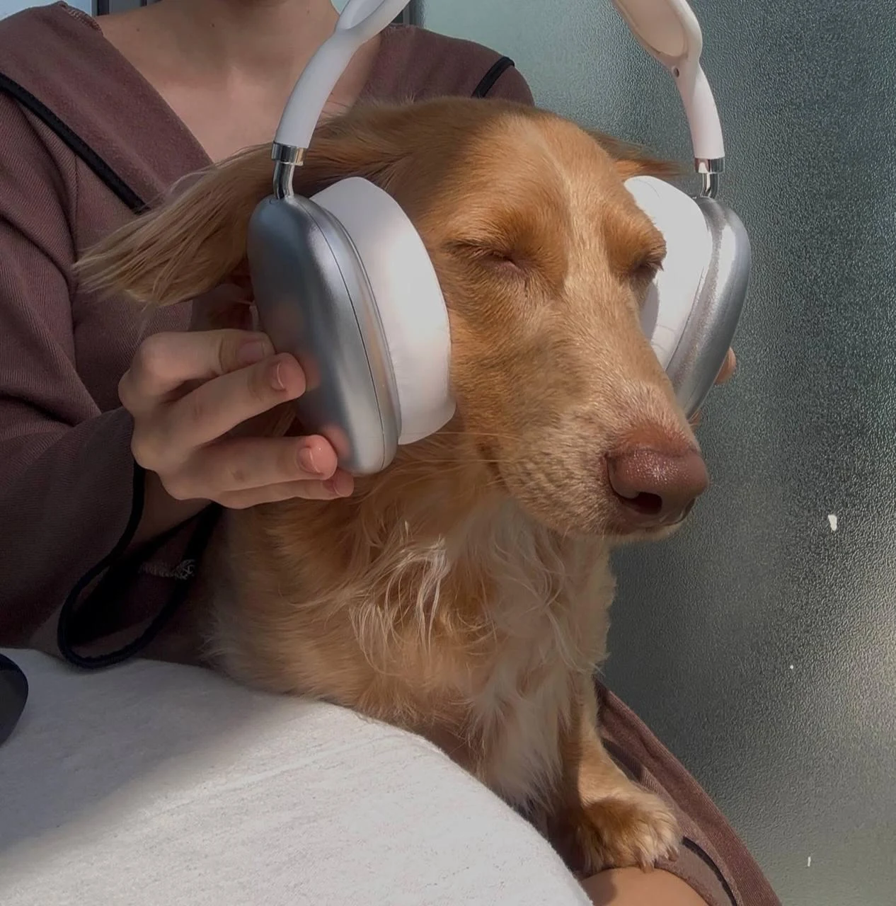
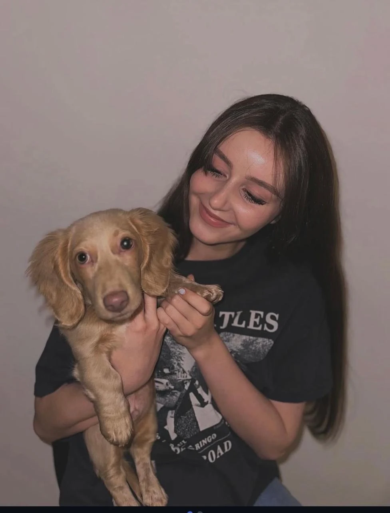

The album
A few of my favorite views.







A page for
Flynnie
Those ears deserve a page of their own. Especially when they’re wearing headphones.




A few of my favorite views.



A page for
Those ears deserve a page of their own. Especially when they’re wearing headphones.


